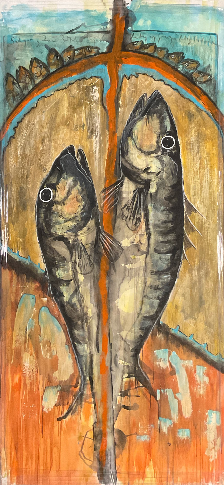
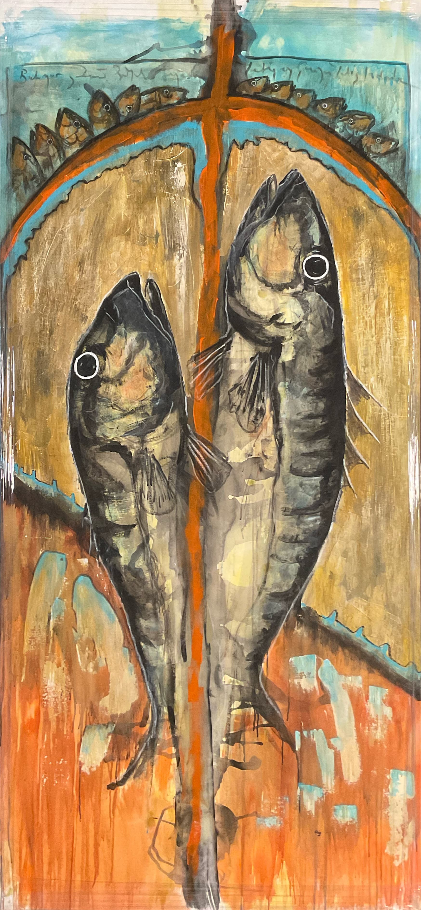

Hafıza, içinde geleneğin şifrelerini taşıyan bir potansiyel enerjidir. Bu enerji, sanat aracılığıyla harekete geçtiğinde geçmişle gelecek arasında bir geçit açar. Sanat, köklerinden aldığı birikimi bugünün diliyle yeniden kurarken, geleneği yeniden tanımlar; onu sabit bir miras değil, yaşayan bir süreç haline getirir. Octavio Paz’ın sözünü ettiği gibi, gelenek kesin bir zamanda oluşmaz; zamanın kendi üzerine kıvrıldığı, geçmişle geleceğin aynı anda var olduğu bir “şimdi”de şekillenir.
Ali Emre, Sarnıç sergisinde kendi hafızasıyla şehrinin, İstanbul’un katmanlı, palimpsest belleğini buluşturuyor. Bu buluşmanın merkezinde, çocukluğunun kimi anılarından süzülen mekandaki balık imgeleri yer alıyor. Çocuk aklında balıklara ait bir mekân olarak yer eden bir sahneler, yıllar içinde dönüşerek hem bireysel hem de kentsel hafızanın bir parçasına dönüşüyor.
Memory is a potential energy that carries the codes of tradition within it. When this energy is activated through art, it opens a passage between the past and the future. Art redefines tradition by reconstructing the accumulated heritage from its roots in today's language, transforming it from a fixed legacy into a living process. As Octavio Paz said, tradition is not formed at a specific time; it takes shape in a “now” where time folds in on itself and the past and future exist simultaneously.
In the Sarnıç exhibition, Ali Emre brings together his own memory with the layered, palimpsestic memory of his city, Istanbul. At the center of this encounter are images of fish in a space filtered through certain memories from his childhood. Scenes that took root in his childish mind as a place belonging to fish transform over the years, becoming part of both individual and urban memory.